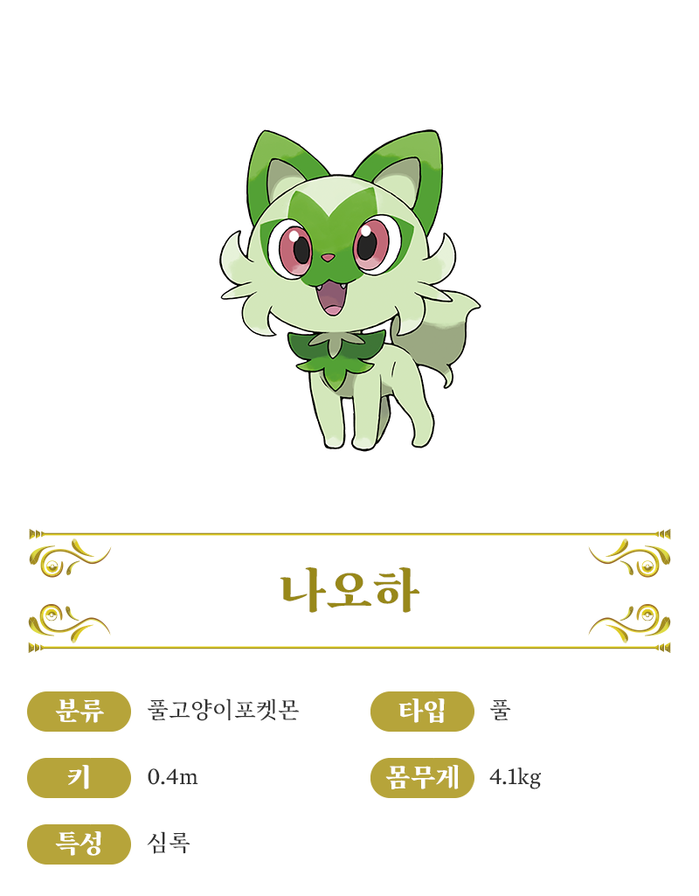

스타팅 포켓몬
나오하
꾸왁스
뜨아거
나오하

달콤한 향기를 퍼뜨리는 꾹꾹이 공격
앞발을 꾹꾹 문질러서 주변에 달콤한 향기를 퍼뜨리는 것으로 상대를 매료시킵니다. 향기에는 아로마테라피 효과가 있어서, 상대의 전의를 상실하게 만듭니다.
식물에 가까운 성분의 털
부드러운 털의 성분은 식물에 가까워서, 햇빛을 흡수해서 에너지를 만들 수 있습니다. 그루밍으로 털에 수분을 공급해서 광합성이 잘 되게 합니다.